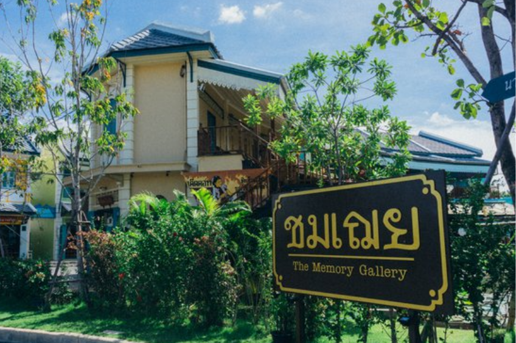
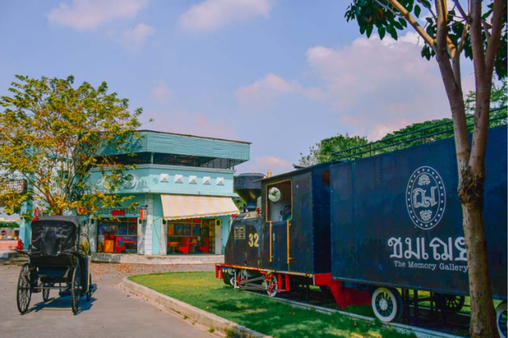
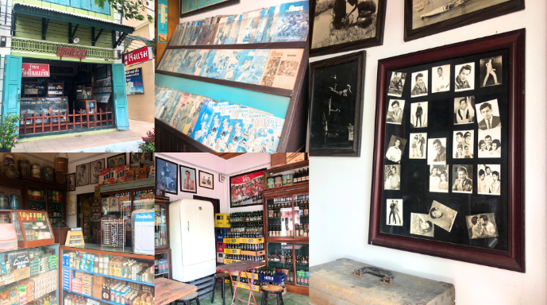
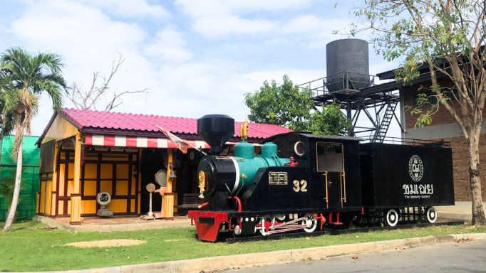

ร้านชมเฌย

หากใครกำลังมองหาที่เที่ยว ที่ถ่ายรูปสไตล์วินเทจย้อนยุค แนะนำให้มา “ชมเฌย” แล้วจะประทับใจพร้อมได้รูปสวยกลับไปเพียบ

ในส่วนของโซนนี้ ผู้ที่เข้ามาเยี่ยมชมจะต้องผ่านทุกคน เพราะหากจะเข้าเยี่ยมชมสตูดิโอจะต้องเข้าผ่านคาเฟ่ก่อน สำหรับโซนคาเฟ่จะอยู่ในอาคารบ้านสีขาว ที่ด้านในตกแต่งสไตล์วินเทจ และส่วนของด้านหลังบ้านมีสระน้ำเล็กๆและโต๊ะให้ลูกค้าได้นั่งพักผ่อน ให้ความรู้สึกเหมือนเรานั่งทานกาแฟอยู่นอกชานบ้าน

สำหรับโซนนี้ทาง “ชมเฌย” ได้เนรมิตพื้นที่ของทางสตูดิโอให้ย้อนยุคไปในยุด 80s ที่เต็มไปด้วยอาคารพาณิชย์ต่างๆ ไม่ว่าจะเป็น ร้านขายเครื่องเขียน ร้านซักแห้ง ร้านขายของเล่น ร้านขายของชำ ร้านตัดผม ร้านขายยา โรงรับจำนำ โรงหนัง หรือแม้แต่สถานีรถไฟ

สำหรับใครที่เป็นสายถ่ายรูปอยากให้ลองมากันดู และถ้าไม่อยากเจอแดดแรงๆ แนะนำให้มาช่วงบ่ายแก่ๆประมาณ 4 - 5 โมงเย็น แต่ถ้าอยากถ่ายรูปออกมาแล้วสีสดๆ ก็แนะนำว่าให้มาช่วงเที่ยงๆบ่ายๆ